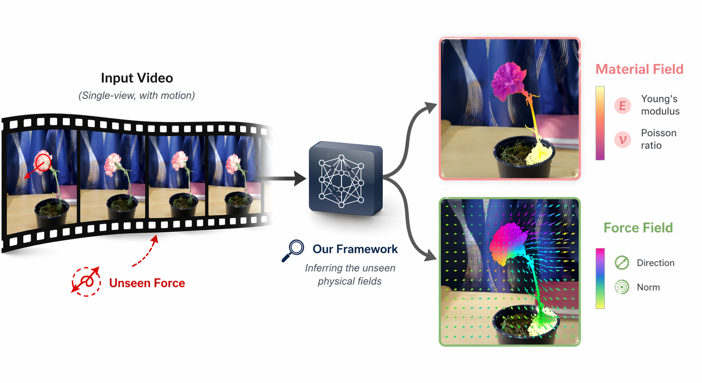
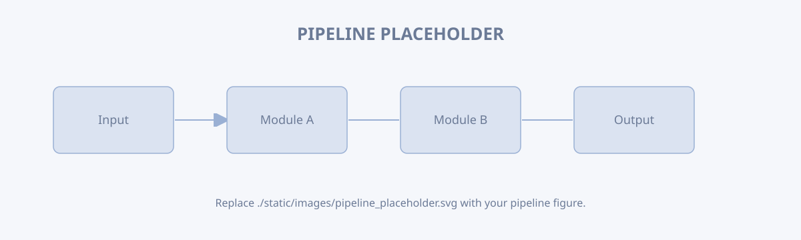

SIGGRAPH ASIA 3026 · Machine Vision Course Project · Spring 2026
PhysFields: See the Unseen from Single-view Videos
1University of Rochester
*Equal contribution

Abstract
Inferring the physics underlying visual motion is a fundamental goal of computer vision. Existing video-based inverse-physics methods typically recover either material properties or force fields, but not both jointly. We present a unified end-to-end differentiable framework for simultaneously recovering force fields and material fields from a single video. Our method starts from a 3D Gaussian Splatting reconstruction of the first frame, converts the recovered surface into an interior-filled volumetric domain, and couples it with a differentiable Material Point Method simulator. A Vision-Language Model provides physically grounded initialization of material parameters. The framework is optimized directly from the input video using only pixel-level reconstruction losses, including MSE and SSIM, enabling safe and efficient recovery of both force and material fields without proxy supervision. Experiments on synthetic and real-world scenes show that our method yields substantially more faithful physical reconstructions than force-only baselines, and further enables physics-aware video synthesis and editing under modified physical conditions. We envision this line of work as a step toward closing the loop between vision and observation.
Method

Results
Carnation — hover over either vertical handle to grab it, then move your cursor to compare Simulated / GT / Error.
Reconstructed Materials Field Visualization
Reconstructed Force Field Visualization
Quantitative Evaluation
| Method | PSNR (dB) ↑ | SSIM ↑ |
|---|---|---|
| Physics3D | 14.72 | 0.59 |
| PhysDreamer | 13.89 | 0.55 |
| PhysGaussian | 13.86 | 0.57 |
| Ours | 24.92 | 0.75 |
Our work can reconstructed much better results compare with prior works, by increasing > 10dB performance.
BibTeX
@misc{AUTHOR_YEAR_KEY_PLACEHOLDER,
title = {PhysFields},
author = {Authors},
year = {2026},
howpublished = {Machine Vision Course Project, University of Rochester},
url = {https://daijun10086.github.io/PhysFields/}
}